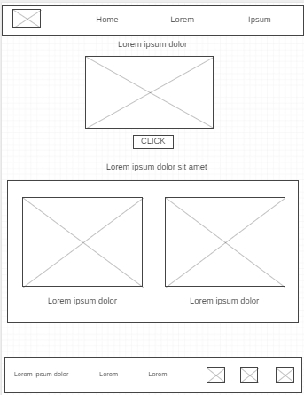
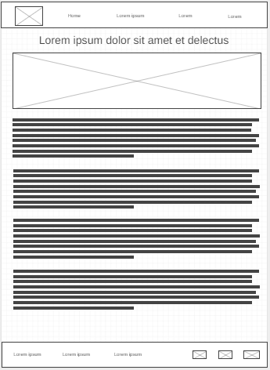
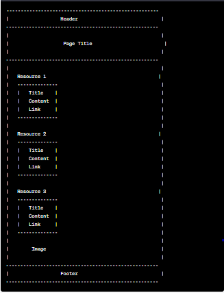

Overview
Purpose
Our website offers step-by-step guides for troubleshooting common Android phone problems, providing visitors with comprehensive resources to resolve software and hardware issues quickly and easily.
Audience
Our website is specifically designed for Android phone users in the age range of 18 to 35, who are seeking step-by-step guides to troubleshoot and resolve common technical issues with their devices. Our target audience comprises individuals with diverse backgrounds and technical proficiency levels, including both beginners and intermediate users. They are primarily English-speaking users located in various regions, with a particular focus on urban areas. Our goal is to provide comprehensive and user-friendly resources that empower Android phone users to effectively address software and hardware problems on their devices.
Branding
Website Logo
Style Guide
Color Palette
Palette URL: https://coolors.co/396e94-e7c24f-a43312-381d2a-aabd8c| Primary | Secondary | Accent 1 | Accent 2 |
|---|---|---|---|
| #7cfef0 | #6bffb8 | #2ceaa3 |
Typography
Heading Font: Montserrat
Paragraph Font: Open Sans
Normal paragraph example
AndroidFixer is a website dedicated to providing solutions for common issues faced by Android users. Our team of experts shares their knowledge through tutorials, step-by-step guides, and videos to help users resolve their Android-related problems quickly and easily. Whether you're an Android enthusiast or a casual user, AndroidFixer has the resources you need to get your device running smoothly again.
Colored paragraph example
you will have access to a variety of resources and tools to help you troubleshoot and fix common issues with your Android device. Our tutorials, step-by-step guides, and videos cover everything from software glitches to hardware malfunctions, and are designed to be easy to follow regardless of your level of technical expertise. Our team of experts is constantly updating our content to ensure that it remains relevant and up-to-date with the latest Android developments. Additionally, our community forum allows you to connect with other Android users and share tips, tricks, and advice. With AndroidFixer, you can rest assured that you have the support you need to keep your Android device running smoothly.
Navigation
Site Map
Content
Home page
Welcome to AndroidFixer, your ultimate destination for all things related to Android troubleshooting. Whether you're a beginner seeking basic troubleshooting tips or an advanced user looking for in-depth solutions, our website provides the resources and information you need to fix Android issues and enhance your device's performance.
Our team of experts is dedicated to providing you with high-quality content that is informative, practical, and tailored to your needs. From step-by-step guides and tutorials to helpful videos and downloadable tools, we cover a wide range of topics to help you resolve common Android problems and optimize your device.
As you explore our website, you'll find a wealth of valuable resources designed to assist you at every step of your Android troubleshooting journey. Whether you're looking for solutions to specific error messages, tips to improve battery life, or recommendations for useful apps, our platform offers comprehensive information and practical advice.
Images for the Home page


About Us
At AndroidFixer, we are passionate about helping Android users overcome challenges and make the most of their devices. Our team consists of experienced professionals who are dedicated to sharing their expertise and assisting you in resolving Android issues effectively.
When you visit our About Us page, you'll have the opportunity to learn more about our team members, their backgrounds, and their commitment to providing reliable and up-to-date troubleshooting guidance. We believe in the power of community support and aim to build a trusted platform where Android users can find the help they need.
We continuously update our content to ensure that you have access to the latest troubleshooting techniques, tips, and best practices. Our goal is to empower Android users with the knowledge and skills to troubleshoot and resolve common problems, saving them time and frustration.
Images for About Us

Resources
Our Resources page is a comprehensive hub for all your Android troubleshooting needs. We have curated a wide range of resources, including guides, tutorials, articles, and recommendations, to help you overcome common Android issues and enhance your device's performance.
From fixing software glitches and optimizing battery usage to resolving connectivity problems and exploring advanced customization options, our content covers a broad spectrum of topics. We provide detailed instructions, tips, and troubleshooting strategies to address various scenarios you may encounter while using your Android device.
In addition to our informative content, we encourage active user engagement and community participation. You can join our forums, interact with fellow Android enthusiasts, share your experiences, and seek personalized assistance. We believe that by fostering a collaborative environment, we can collectively enhance our Android troubleshooting skills and support each other.
Images for Resources


Wireframes
Create three wireframes for your site, one for each page, and list them here:
Home
The wireframe for the home page should showcase a clean and user-friendly design with prominent sections for featured troubleshooting guides, popular articles, and quick access to common Android issues. We want to create a visually appealing and intuitive interface that helps visitors quickly find the solutions they need and navigate to other relevant sections.
About Us
The wireframe for the About Us page should highlight our team members, their roles, and a brief overview of AndroidFixer's mission and commitment to providing reliable Android troubleshooting resources. We want to create a personal and engaging experience that helps users connect with the individuals behind AndroidFixer and understand our dedication to assisting the Android community.
Resources
The wireframe for the Resources page should present a well-organized layout with categorized sections, search functionality, and options for sorting and filtering troubleshooting resources. We want to ensure that users can easily find the information they need, whether they are looking for specific Android issues, device-specific troubleshooting guides, or general tips to optimize their Android experience.
